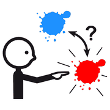

Secondo incontro, modulo 7
Task analysis
Scomporre un'attività in piccoli passaggi da vedere uno dopo l'altro: uno strumento per l'autonomia di tutti.
Perché serve
 imparare
imparare da solo
da solo contento
contentoRende visibile una routine che di solito resta implicita. Riduce l'ansia per l'imprevisto e i comportamenti problema nei passaggi da un'attività all'altra.
Non è uno strumento per la disabilità: è un equalizzatore, utile a chiunque stia conquistando l'autonomia.
domande
per osservare
Quanto scomporre
 tanti
tanti pochi
pochi
scegliereNon c'è una scomposizione giusta per tutti. La regola: se un passaggio blocca, va diviso ancora. «Prendo il sapone» può diventare: allungo la mano, afferro, premo, ritiro.
- Si blocca sempre nello stesso punto?
- Salta un passaggio?
- Serve un aiuto fisico o basta il simbolo?